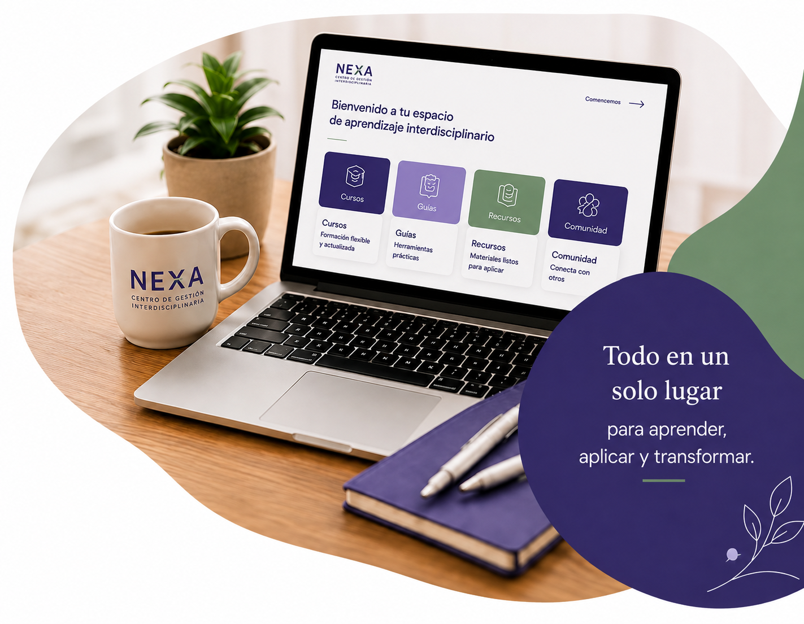
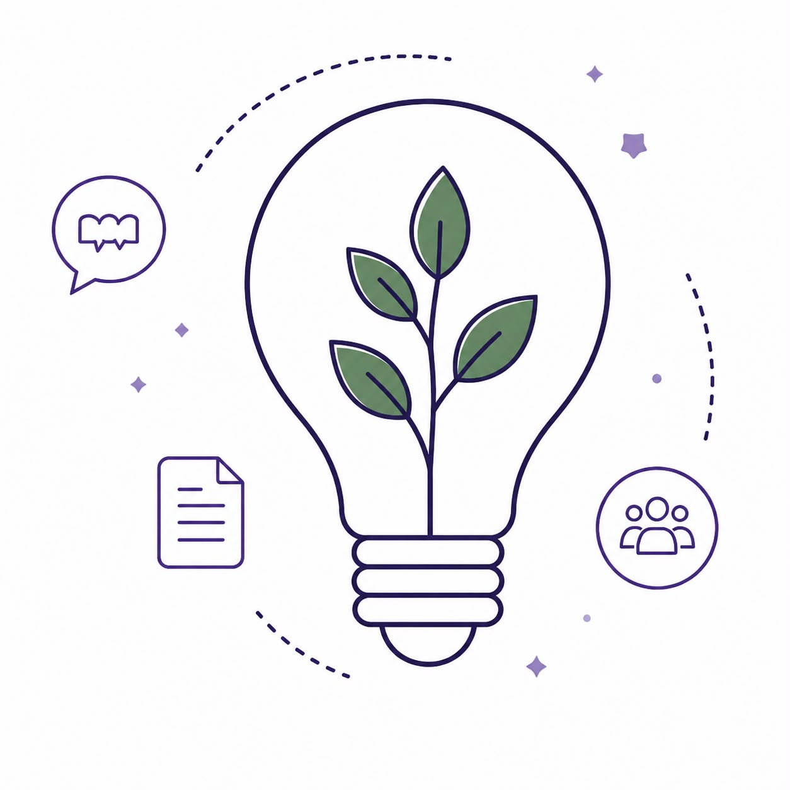
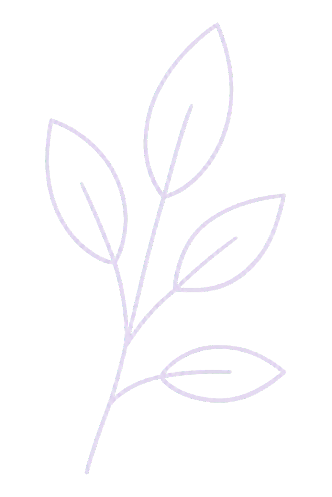

Enfoque de derechos
Ponemos a las personas en el centro de cada intervención.
En NEXA encontrarás formación, guías y recursos interdisciplinarios para comprender, actuar y generar impacto en contextos de vulneración de derechos.
Ver cursos

Creemos que cada situación de vulneración de derechos existe una persona que merece una respuesta oportuna, digna e integral.
Por ello, conectamos conocimiento, profesionales e instituciones en un mismo ecosistema, donde la información se transforma en acción y la coordinación en impacto. Proteger derechos no depende únicamente de atender un problema, depende de comprenderlo, compartirlo y abordarlo de manera conjunta.

Recursos diseñados para el desarrollo profesional y el bienestar de las personas con las que trabajas.
Formación online en áreas clave de vulneracion de derechos
Guías prácticas paso a paso para tu trabajo diario
Materiales listos para aplicar en tu práctica profesional.
Capacitaciones y recursos diseñados para equipos
Trabajadores/as sociales
Psicólogos/as
Abogados/as
Educadores/as
Terapeutas ocupacionales
Profesionales de la salud
Equipos e instituciones
Y todos los profesionales que trabajan diariamente por el bienestar, la dignidad y los derechos de las personas y comunidades.
NEXA es un centro de gestión interdisciplinaria que impulsa prácticas profesionales más conscientes, informadas y humanas.
Reunimos conocimiento, experiencia y herramientas para apoyar a quienes están en la primera línea del cambio social.
Ponemos a las personas en el centro de cada intervención.
Contenido riguroso, práctico y en constante actualización.
Integramos miradas y saberes para abordar la complejidad.
Trabajamos por una sociedad más justa, empática e inclusiva.